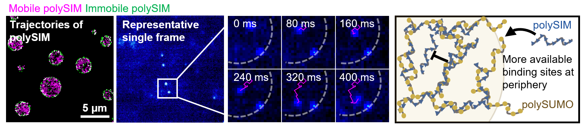

Biomolecular condensates are not only structured in space, but also defined by their physical properties. I study how condensate function is shaped by mesoscale physical parameters—including size, internal organization, and material state—and how these properties regulate molecular dynamics and biochemical activity. A central goal of this work is to understand how physical features of condensates encode function beyond molecular composition alone.
Quantitative control and measurement of biomolecular condensates
To address this, I develop quantitative approaches to control and measure condensates across scales, combining biochemical reconstitution with high-resolution imaging. These strategies enable precise manipulation of condensate properties and allow direct measurement of molecular behavior within condensates at high sensitivity, including at the single-molecule level. They also make it possible to observe dynamic processes within condensates over time.

Size as a fundamental physical variable
Among different parameters, condensate size provides a particularly tractable and fundamental variable. Biomolecular condensates span a wide range of length scales, from nanometer-scale assemblies to micron-sized compartments, and their size can change dynamically in living cells. However, whether condensates of different sizes operate under distinct physical and functional regimes remains largely unclear.
My work explores how changes in size alter spatial organization, thereby tuning molecular recruitment and biochemical activity. More broadly, this connects to a general framework in which molecular-scale interactions give rise to network architectures that define condensate states which in turn regulate function.
In parallel, I am interested in how physical features of biomolecular assemblies encode biochemical outputs more generally. For example, in collaborative work, I investigate how the length of nucleic acid polymers can regulate enzymatic activity, providing a complementary perspective on how physical dimensions influence biological function.
Together, these works seek to establish a quantitative framework linking physical properties of condensates to their biological functions, bridging molecular interactions, mesoscale organization, and cellular activity.